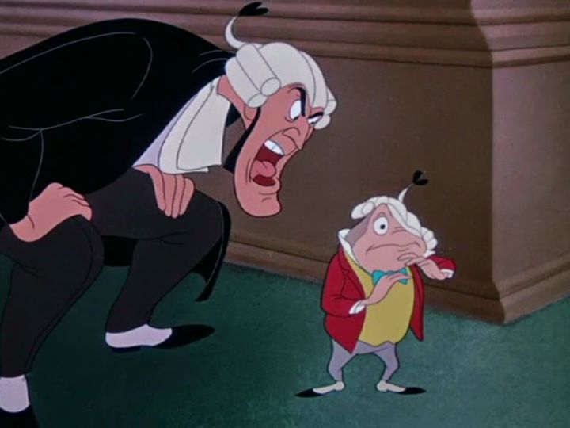

After several years of releasing nothing for "package"-films in the 1940's, the final such movie Disney would release was "The Adventures of Ichabod and Mr Toad" in 1949. It's the most straightforward movie, and arguably not an anthology, as there's only two shorts, with minimal transitional content between them. Both of the two shorts are also classic Disney stories, both of which I've seen as a child as standalone releases. And both are quite good, holding up well today... with two for two being good, the film as a whole is worthwhile. The two stories in question are "The Wind and the Willows," based on the children's novel by Kenneth Grahame, which has been adapted several times elsewhere. Unlike other cases, while this Disney version is probably the most well-known, it isn't automatically the version people might think of when talking about the story. The second is "The Legend of Sleepy Hollow," the American ghost story by Washington Irving. The memorable portrayal of the lead character, Ichabod, makes the Disney adaptation the defacto version most people remember, and it doesn't shy away entirely from the scary ending, which might make it more entertaining to older boys.In "Willows," we're introduced to Mr. Toad, a wealthy animal that is frequently stricken with "mania," a new interest after the other and a thirst for adventure. His antics (with Cyril, his horse, as a sidekick) drive his friends, Mr. Badger, Mr. Rat, and Mr. Mole, up the wall, and he doesn't seem to take responsibility for any of it or his harm to the town. After trying to lock Toad in his house to cure him, Toad goes to far in his latest mania to obtain the latest fad, a motorcar, and steals one. The act lands him in jail, and all of them have to prove Toad's innocence, the fact that he didn't steal anything, but made a deal with a shady gang leader that aimed to trick him. The characters are all memorable, and there are some fun animatied chase sequences that get reused in future Disney movies (see "The Jungle Book" for the most obvious example). The characters are all over-acted, charmingly so. The narration is provided by Basil Rathbone of all people, further exagerating the British sensability of the rich governor Toad and his mistakes. Even though the story varies from the original book, this is a great introduction to the fable for both young children and adults. The effect of the short's success is long-lived, even earning the characters representation in Walt Disney World's rides.  "Sleepy Hollow" on the other hand is a fun, but foreboding, American legend, with a greater reliance on music (Bing Crosby narrates this one). Ichabod Crane, a tall and boney fellow with a large nose, is the new school teacher, and his odd mannerisms make him quite popular. Which he takes advantage of, be it by receiving free food or money, in a non-malevolent way. He falls in love with the beautiful Katrina van Tassel (who happens to be daughter to a rich lord, as Ichabod notices), but the tough man in town, Brom Bones (an archtype for Gaston in the later "Beauty and the Beast"), also loves Katrina, and won't stand for this rival. He plays into Ichabod's superstitious nature, and tells a story at a halloween party of the Headless Horseman, a dark figure that rides through the nearby forest, searching for a new head. Leaving towards home that night, a little nervous, we don't know from the original story if he runs out of town, or comes across the real Headless Horseman and is killed (or if a certain someone dressed as the figure to fool him). Disney's short is a little more literal, with a climatic chase between Ichabod and the Horseman, but provides a uncertain ending that viewers have to decide on their own. That choice of ending helps make the short an iconic Halloween story for Disney fans. Both stories could have been expanded to complete feature films, and their characters almost warrant it, but the short runtime helps things progress more efficiently. Animation quality is also a tiny bit better than the shorts from prior package films, although it's really the bonds the viewer gets with the story and characters that helps with the movie's value. I personally rather liked the setup of each story, of a distinguished narrator opening a live-action book from a library to introduce them. That formatting and the story choices make this a bit more entertaining for adults, or at least older children, while still retaining fun elements that young children can enjoy. It's for these reasons, and personal nostalgia, that I have a soft spot in particular for "The Adventures of Ichabod and Mr Toad."
- "Ani" More reviews can be found at : https://2danicritic.github.io/ Previous review: review_The_100_Girlfriends_Who_Really,_Really,_Really,_Really,_Really_Love_You Next review: review_The_Ancient_Magus'_Bride